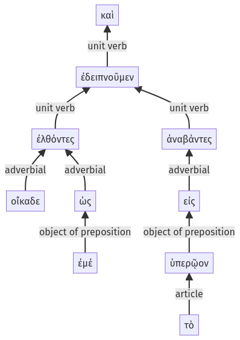

Lysias, Oration 1, 1.23.14-1.23.23a
1.23.1-1.23.13a | 1.23.24-1.23.35a
Sentence 63
1.23.14-1.23.23a
καὶ ἐλθόντες οἴκαδε ὡς ἐμέ, ἀναβάντες εἰς τὸ ὑπερῷον ἐδειπνοῦμεν.
2 ἐλθόντες οἴκαδε ὡς ἐμέ
2 ἀναβάντες εἰς τὸ ὑπερῷον
1 ἐδειπνοῦμεν
καὶ ἐλθόντες οἴκαδε ὡς ἐμέ, ἀναβάντες εἰς τὸ ὑπερῷον ἐδειπνοῦμεν.
Highlighting:
- connecting words
- unit verb
- subject
- object
Color code:
- independent clause (level 1, intransitive verb)
- circumstantial participle (level 2, intransitive verb)
- circumstantial participle (level 2, intransitive verb)
